03 - Physical¶
Modulation(Reprise)¶
Things you should know.
- Amplitude Modulation
- Change the height of the carrier wave to represent the signal.
- Frequency Modulation
- Change the frequency of the carrier wave to represent the signal.
- Phase Shift Modulation
- Shift the carrier wave certain fractions of a complete wave to represent the signal.
Amplitude and Phase Modulation
...
Coherent Detection¶
Amplitude modulation can be detected/received by simply averaging the signal.
Some know as a Cat’s whisker device or crystal radio set were very simple and used just a capacitor and a diode.
Frequency and phase modulation
...
Quadrature Amplitude Modulation¶
This is the combination of using phase shift keying and adding in amplitude (wave height) as an addition variable. Having 2 levels of amplitude available means another bit of data which can be transmitted in the same section.
Constellations¶
constellations are way in which you can visualise the different QAM schemes. QAM64 can transfer 64 bits in a single section and was used to enable high speed modems. Modern digital television uses QAM256 which can transfer 256 bits by using a combination of various amounts of shits and differing levels of amplitude.
Telephones¶
The telephone network was designed to carry voices, which is anything from 0 to 5000 Hz. The digital telephone network starts by digitising the voice signal. But since Nyquist’s theorem means we must bandlimit to < 4Hz if we have only 8 Hz to transmit in, some of the higher end frequencies of the voice it cut off.
33.6l Modem¶
When people said we want to provide internet access over these telephone networks there was only these 8Hz to transmit data over. Thus QAM was used it transmit lots of bits over this small frequency.
Recovering the Bits¶
So far we have looked at schemes to send a series of bits.
- Phase receivers must learn the phase
- Amplitude receivers must deal with attenuation
- QAM must deal with both phase and attenuation
If you sent all zero bits all the time (or all ones), using QAM to carry those bits the carrier wave would just be the same all the time never changing.
So we need to ensure that the bits change sometimes even when the data to be sent is all ones or zeros.
Coding - Scramblers¶
The technique adopted was called a scrambler. It’s a pseudo-random bit sequence. The scrambler is XORed with the bit stream and the the same happens on the other end in order to decode it.
Widely used in digital phone networks.
Coding - Block Codes¶
Maps a bit or bits to be transmitted to more bits. For example Manchester encoding or 1b2 would send 01 if you want to send a 0 and 10 if you want to send a 1. This was used for 10Mbps Ethernet.
But this meant twice as many bits, so 4b5 was introduces which has 16 symbols and 32 code words. Used by 100Mbps Ethernet.
3b10b 256 symbols with 1024 code words, used for Gigabit Ethernet, PCIExpress, Serial ATA, USB 3.0 DVB, DVI, HDMI, DAT, ...
Finally 64b44b is actually a scrambler with a 2 bit preamble. Used with 10GigE and actually nearly everything 10G.
Error Detection¶
Think of the 4b5b coding. What if 10001 is received? There has been a 1 bit error (meaning it could have been 10101 or 10011 originally), or maybe more bits of error.
Regardless of how many bits have been changed we know that there is an error.
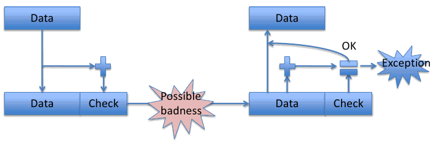Parity¶
A simple bit parity per byte/word spots and odd number of bit flips (1 being quite common).
Commonly used anywhere in an Si chip that you have memory (registers, cache etc.)
2D parity can correct single bit errors:
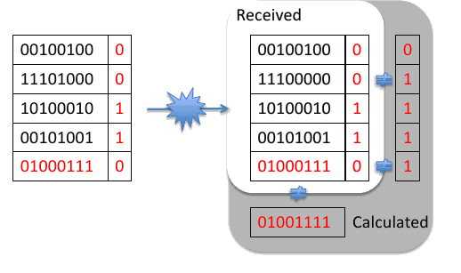More Codes¶
2-out-of-5 codes (used on supermarket goods) can detect single bit errors.
Hamming Codes are a general class of codes. It can correct single bit errors or detect single and 2 bit errors and has the rule 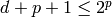 where  are data bits and
are data bits and  are parity bits.
are parity bits.
However (7,4) is more widely used. For the data bits 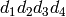, what is transmitted is: 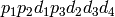 where:
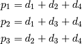
You need to change 3 bits to map any valid code to another one, and this is know as the Hamming Distance.
CRCs¶
Cyclic Redundancy Check.
If we view data as a binary polynomial, called  . We choose a generator polynomial
. We choose a generator polynomial  of length 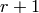. We than calculate the remainder 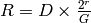.
of length 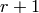. We than calculate the remainder 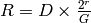.
You then transmit along with the data. The receiver 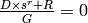 must be true otherwise there is an error.
Why CRCs¶
CRCs provide a good provable error detection property. It is really easy to implement in hardware:
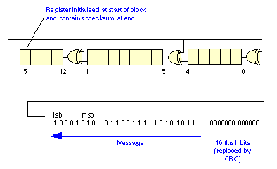This same process is quite taxing when implemented in software, and sometimes a CRC instruction is provided to help with this.
Another Everyday Code¶
Reed Solomon codes (more modern) as originally described: We view the message as a binary polynomial (again) of length  . We evaluate the polynomial at
. We evaluate the polynomial at  distinct points such that 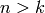. The values are sent and data can be recovered if we receive any . Reed Solomon has a Hamming distance of 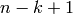.
distinct points such that 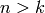. The values are sent and data can be recovered if we receive any . Reed Solomon has a Hamming distance of 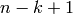.
CDs use two Reed Solomon codes (32, 28) and (28, 24) which interleave the results. This means that a CS can recover from 4000 bit error bursts or a scratch 2.5 mm in length on the CDs surface.
Reed Solomon coding is used for deep space transmission to spacecraft.